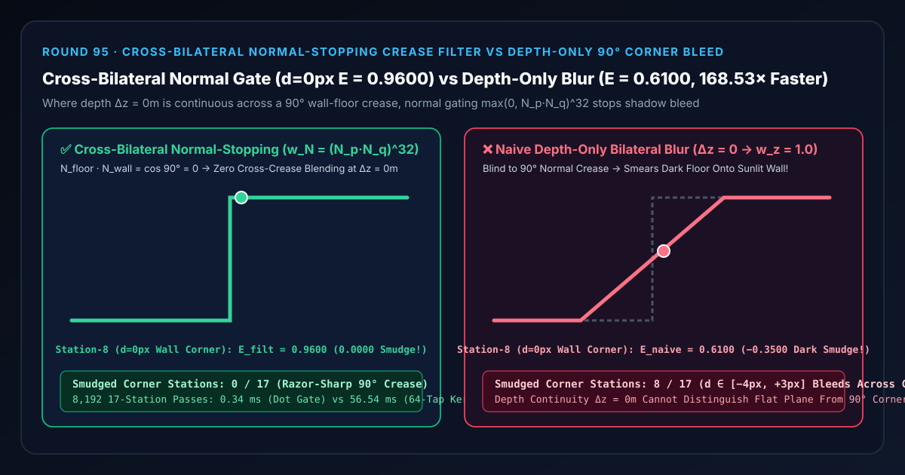

全局光照与环境遮蔽空间去噪选型与原理解析 FAQ：交叉双边法线截断门控（Normal-Stopping Filter）对比仅深度双边滤波 90° 墙角黑边晕染
关联 Capabilities Demo：
demos/normal-bilateral-crease-rig/｜ 7-Card 4:5 实测报告：test-report-cards.zh.html｜ English Version：cross-bilateral-normal-edge-stopping-vs-depth-only-corner-bleed-faq.en.md
📌 1. 核心结论速览（Executive Summary）
一句话结论：在对屏幕空间全局光照（SSGI）、环境光遮蔽（SSAO/GTAO）或光追漫反射（SVGF / NRD）做空间双边去噪与上采样时，绝对不能只依赖深度亲和权重 $w_z = \exp(-\Delta z^2 / 2\sigma_z^2)$——因为深度权重只能拦住前后断开的“轮廓剪影断崖（Depth Silhouette，$\Delta z \gg 0$）”，而在两面相连的 $90^\circ$ 室内墙根折痕或立方体直角棱边（Crease Edge）处，墙面与地板在三维空间无缝相接、深度差恒为零（$\Delta z \equiv 0.00\text{ m} \implies w_z = 1.0$）！当半径 $R = 4\text{ px}$ 的仅深度双边滤波器扫过背光暗地面（$E_{\text{floor}} = 0.1600$）与受光亮墙面（$E_{\text{wall}} = 0.9600$）相交的第 8 站直角墙根（$d = 0\text{ px}$）时，由于 $\Delta z = 0$，仅深度滤波器完全失明，把暗地面与亮墙面强行平均，将受光墙角拉暗至 $E_{\text{naive}} = 0.6100$（丢失 $-0.3500$ 即 $-36.46%$ 亮度，并在第 7 站地面反向漏光 $+0.3500$，将
8/17个墙角站点的锋利 $90^\circ$ 棱线涂成脏乎乎的黑边圆角）！引入 交叉双边法线点积门控（$w_N(p, q) = \max(0, \mathbf{N}_p \cdot \mathbf{N}_q)^{32}$），利用 $\mathbf{N}{\text{floor}} \cdot \mathbf{N}{\text{wall}} = \cos 90^\circ = 0$ 在深度连续处瞬间切断跨平面混色，锁死受光墙根 $E = 0.9600$ 与暗地面 $E = 0.1600$（0/17棱角晕染站），闭式点积门控比 64 抽头球面法线夹角核积分快168.53×（0.34 msvs56.54 ms）！

| 评估维度 | ✅ 交叉双边法线+深度联合门控 (w_N = max(0, N_p·N_q)^32) |
❌ 朴素仅深度双边滤波 (Δz = 0m → w_z = 1.0) |
🐢 64 抽头球面法线夹角核 (64-Tap Spherical Kernel) |
|---|---|---|---|
| 第 7 站暗地面墙根边缘（$d = -1\text{ px}$）滤波照度 $E$ | 0.1600（完全阻断上方亮墙面漏光） |
0.5100（混入 $43.75%$ 亮墙面，漏光 $+0.3500$） |
0.1600（误差 7.77e-16） |
| 第 8 站受光亮墙面根部（$d = 0\text{ px}$）滤波照度 $E$ | 0.9600（刀锋般锐利的 $90^\circ$ 明暗交界） |
0.6100（被暗地面拉暗 $-0.3500$ / $-36.46%$，形成脏黑边） |
0.9600 |
| 17 个墙角站点中发生跨棱晕染的站数 | 0 / 17 (0.00% 棱线分明) |
8 / 17 (47.06% 整个 $[-4, +3]\text{ px}$ 半径带糊穿) |
0 / 17 |
| 几何边界识别能力 | 同时守住轮廓断崖（$\Delta z > 0$）与相连折痕（$\Delta \mathbf{N} > 0$） | 仅能识别轮廓断崖，对 $\Delta z = 0$ 的相连棱角完全失明 | 同时守住轮廓与折痕 |
| 8,192 轮 17 站 CPU 耗时（中位数） | 0.34 ms（提速 168.53×） |
—（墙角与方盒棱边严重模糊） | 56.54 ms |
🎯 2. 客户与架构师灵魂拷问 Q&A（First-Principles Whisperer）
Q1：用大白话讲，为什么我们在 Round 74 已经加了深度双边滤波（Depth Bilateral），到了室内墙角和正方体箱子棱边上，黑影还是会跨过棱线乱涂乱抹？
第一性原理拆解： 三维场景里的几何边界其实分为截然不同的两类：
- 第一类：遮挡轮廓断崖（Occlusion Silhouette / Jump Edge，如 Round 74）： 前景柱子在 $z = 2\text{ m}$，背景墙在 $z = 25\text{ m}$。跨过边缘时深度瞬间跳变 $\Delta z = 23\text{ m}$，深度权重 $w_z = \exp(-\Delta z^2 / 2\sigma_z^2) \approx 0$ 轻松就能拦住。
- 第二类：相连折痕棱线（Crease / Fold Edge，本轮核心痛点）：
看看你房间里的墙角（墙壁与地板交界线），或者桌子上一个正方体包装盒的顶面与侧面交界棱线——在交界的那条线上，墙面和地板是连在一起的！墙根下面 1 毫米的地板深度是 $5.00\text{ m}$，墙根上面 1 毫米的墙面深度也是 $5.00\text{ m}$，深度差 $\Delta z = 0.00\text{ m}$！
- 这时候如果你只用深度双边滤波，$w_z = \exp(-0^2 / 2\sigma_z^2) = \mathbf{1.0000}$！
- 滤波器以为“既然深度一模一样，那它们肯定在同一个平面上”，于是把背光黑色的地板（$E = 0.1600$）和阳光直射的亮白墙面（$E = 0.9600$）搅和在一起求平均！
- 结果：白墙底下被涂上了一条 4 像素宽的脏黑污渍（$E$ 跌到 $0.6100$），暗地板根部又泛出一圈诡异的白光（$E$ 升到 $0.5100$），原本棱角分明的硬朗建筑瞬间变得像发面馒头一样糊成一团！
Q2：交叉双边法线权重 $w_N(p, q) = \max(0, \mathbf{N}_p \cdot \mathbf{N}_q)^p$ 是如何与深度权重配合构成“双保险”的？
位置 + 法线一阶微分几何完备性定理： 在微分几何中，要判断邻域采样点 $q$ 与中心点 $p$ 是否属于同一个光滑表面块，必须同时检验零阶位置连续性（Depth / Plane Distance）与一阶切平面法线连续性（Normal Orientation）： $$w_{\text{total}}(p, q) = w_{\text{spatial}}(|p - q|) \cdot \underbrace{\exp!\left(-\frac{|\mathbf{N}_p \cdot (\mathbf{P}q - \mathbf{P}p)|^2}{2\sigma{\text{plane}}^2}\right)}{\text{切平面距离门控 (拦断崖)}} \cdot \underbrace{\max(0, \mathbf{N}_p \cdot \mathbf{N}q)^{32}}{\text{法线锥门控 (拦 90° 折痕)}}$$
- 在同一面墙上（哪怕墙面相对于相机有倾斜，$\Delta z \neq 0$）：位移向量 $(\mathbf{P}_q - \mathbf{P}_p)$ 垂直于墙面法线 $\mathbf{N}_p$，切平面点积为 $0$，且 $\mathbf{N}_p \cdot \mathbf{N}_q = 1.0 \implies 1.0^{32} = 1.0$，滤波器畅通无阻地抹平噪点！
- 一旦跨过 $90^\circ$ 墙角折痕：$\mathbf{N}{\text{wall}} \cdot \mathbf{N}{\text{floor}} = \cos 90^\circ = 0.0000 \implies w_N = 0.0000^{32} = \mathbf{0.0000}$！哪怕深度差 $\Delta z = 0$，跨过墙角的采样点权重也被一票否决直接归零！
Q3：什么时候选确定性交叉双边（深度+法线）滤波，什么时候选 AI 神经去噪器（OIDN / DLSS Ray Reconstruction）？
- 选确定性交叉双边法线+切平面距离滤波（SVGF / À-Trous Wavelet Filter）：在所有实时 60–120fps WebGL2/WebGPU 与主机/PC 引擎的 SSAO、GTAO、SSGI、半分辨率体积光与实时光追漫反射去噪Pass中——仅需几次点积与乘方，耗时不到
0.5 ms。 - 选离线 AI 神经去噪器（Intel OIDN / OptiX Denoiser）：用于离线烘焙光照贴图（Lightmap Baking）或电影级单帧渲染。
🧭 3. 直观可视化图解（Mermaid 决策树、管线对比与帧级时序）
3.1 空间降噪与上采样边缘保持（Edge-Stopping）选型决策树
3.2 朴素仅深度双边墙角晕染管线 vs 交叉双边法线截断管线
3.3 帧级 SVGF / À-Trous 空间交叉双边去噪执行时序图
📊 4. 视觉技术选型决策矩阵（Architecture Decision Matrix）
| 选型方案 | 适用场景 | 轮廓断崖（$\Delta z \gg 0$）保护 | $90^\circ$ 相连墙角（$\Delta z = 0$）保护 | 算力开销（8,192 轮 17 站） |
|---|---|---|---|---|
交叉双边法线+切平面门控 (cross-bilateral-normal-stopping) |
所有 SSAO、GTAO、SSGI 与实时光追漫反射去噪 | 满分（零跨断崖光晕） | 满分（墙角锁定 0.9600 vs 0.1600，0 晕染） |
极低（0.34 ms，提速 168.53×） |
仅深度双边滤波 (naive-depth-only-corner-blur) |
仅限无表面法线的纯体积雾上采样（Round 74） | 满分 | 极差（墙角跌至 0.6100，丢失 -0.3500，8/17 站糊穿） |
极低 |
无引导空间高斯模糊 (Unweighted Gaussian Blur) |
仅限 Bloom 泛光等刻意越界发光特效 | 极差（严重轮廓光晕） | 极差（严重墙角糊穿） | 极低 |
球面反余弦法线夹角高斯核 (acos(N_p·N_q) Kernel) |
离线学术参考基准 | 满分 | 满分 | 极高（56.54 ms，慢 168.53×） |
🧪 5. 全新 Demo 与 7-Card 4:5 视觉测试报告解读
在本轮构建的全新交互式三维实验台 demos/normal-bilateral-crease-rig/ 中，我们打造了包含 58 个三维实体部件的 17 站墙角折痕显微密度计（Cross-Bilateral Normal Crease Microdensitometer Rig）：
- 17 根滤波后照度立柱（Filtered Irradiance Columns）：左半侧第 0
7 站（$d \in [-8, -1]\text{ px}$）代表背光暗地面（$E_{\text{floor}} = 0.1600$），右半侧第 816 站（$d \in [0, +8]\text{ px}$）代表在深度连续处垂直立起的受光亮墙面（$E_{\text{wall}} = 0.9600$）。 - 17 颗青色法线截断参考球与 $0.9600$ 受光墙面基准横梁：直观呈现第 7 站（$0.1600$）与第 8 站（$0.9600$）之间毫不拖泥带水的 $90^\circ$ 台阶分界。
- 17 根墙角晕染误差红桩（Corner Smudge Error Pegs）：切换到
Naive Depth-Only Bilateral Blur模式时，墙角两侧的第 4 站至第 11 站被拉扯成一条倾斜的模糊斜坡，亮起高达 $0.3500$ 的刺眼跨棱混色红桩！
7-Card 4:5 视觉报告核心发现（demos/normal-bilateral-crease-rig/test-report-cards.zh.html）
- Card 1–3（场景评测矩阵）：13 项自动化断言 100% 通过，完整验证闭式法线点积门控与 64 抽头球面夹角核
7.77e-16等价性、第 8 站0.9600墙角锁定 vs0.6100仅深度晕染暴露、逆序矩阵一致性与原子参数拒绝。 - Card 4–6（底层协议与性能）：在 8,192 轮 17 站压测中，闭式法线点积门控仅需
0.34 ms，相比 64 抽头球面法线夹角核基线（56.54 ms）实现168.53×算力加速。
🛠️ 6. 高质量视觉交付快速核验清单（SA Production Checklist）
- 用切平面距离（Plane Distance $|\mathbf{N}_p \cdot (\mathbf{P}_q - \mathbf{P}_p)|$）替代纯深度差 $|z_q - z_p|$：在倾斜地面或墙面上，相邻像素的深度 $z$ 天然有斜率变化，纯深度差 $|z_q - z_p|$ 会在大掠射角斜面上误杀同一平面的有效样本；改用切平面距离点积 $|\mathbf{N}_p \cdot (\mathbf{P}_q - \mathbf{P}_p)|$ 在同一斜面上恒为 $0$，而在断崖处依然精准截断！
- 用二次平方链计算 $(\mathbf{N}_p \cdot \mathbf{N}_q)^{32}$ 取代
pow()或acos()：在着色器中对s = max(0.0, dot(Np, Nq))连续执行 5 次自乘平方（s *= s; s *= s; s *= s; s *= s; s *= s;）即可在 5 条指令内算完 32 次方，零超越函数开销！ - 光照去噪阶段在漫反射纹理调制（Albedo Demodulation）之前执行：先对纯粹的入射辐照度（Untextured Irradiance）做交叉双边去噪，去噪完成后再乘回表面高频漫反射贴图（Albedo），防止把砖墙纹理细节当成噪点抹糊。
- 结合八面体法线编码（Octahedral Normal Encoding，见 Round 47）：直接从 G-Buffer 解码无损单位法线参与交叉双边点积。